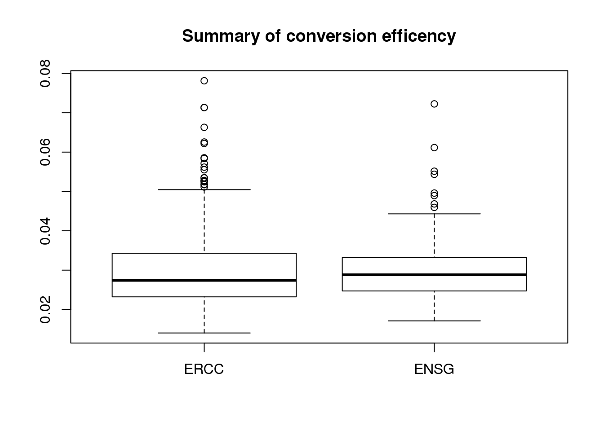
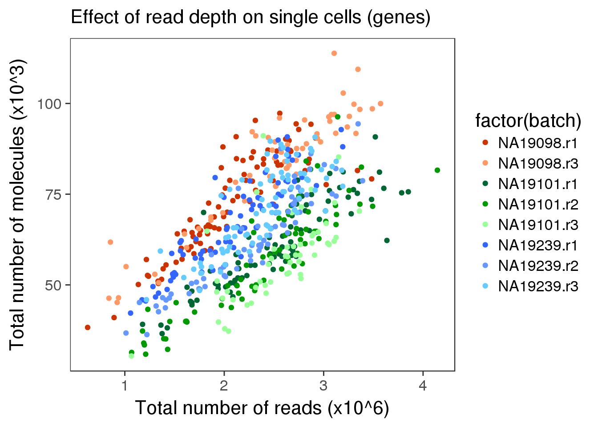
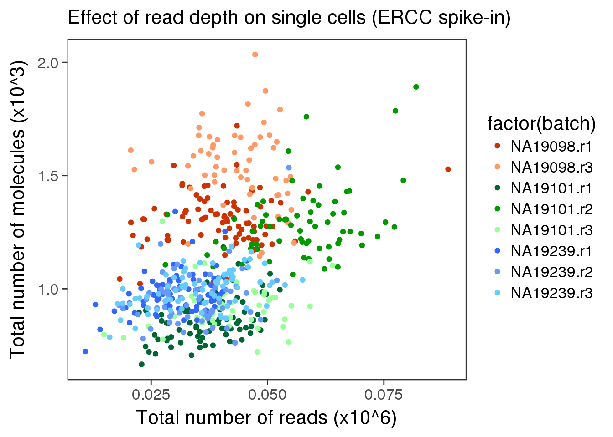
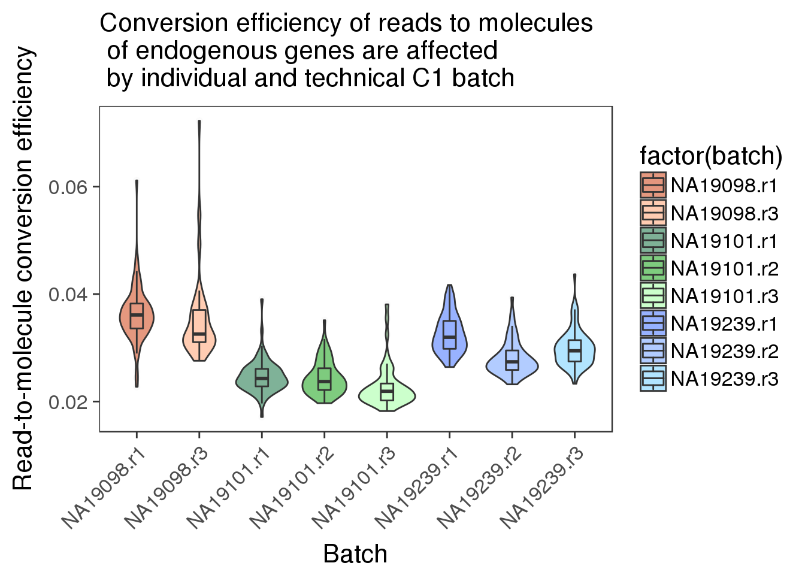
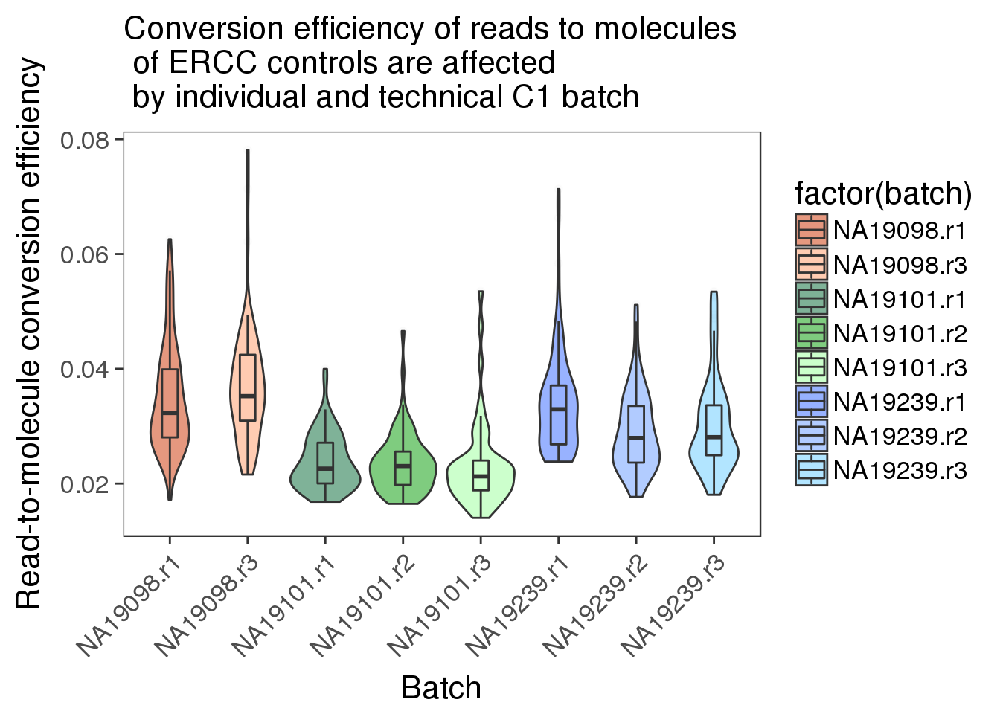
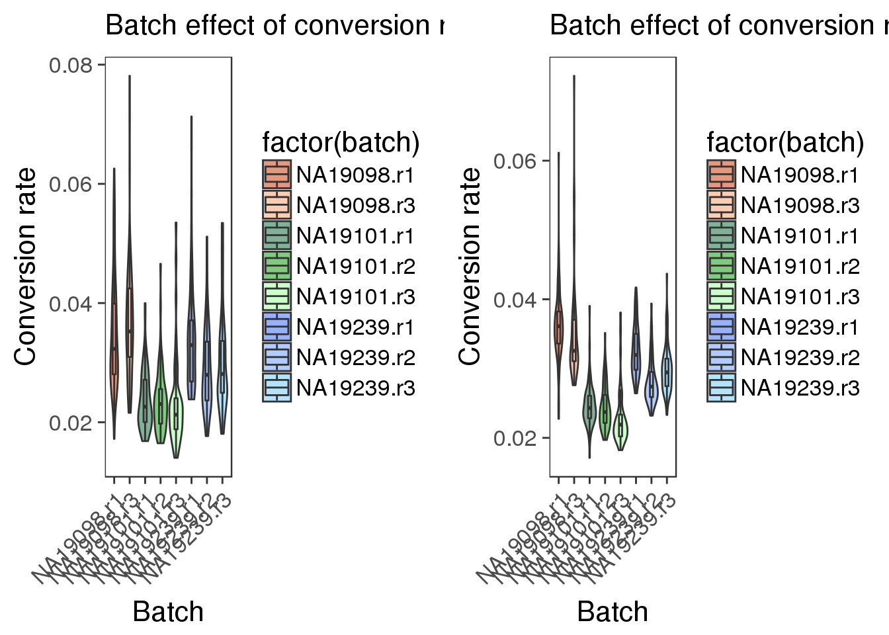
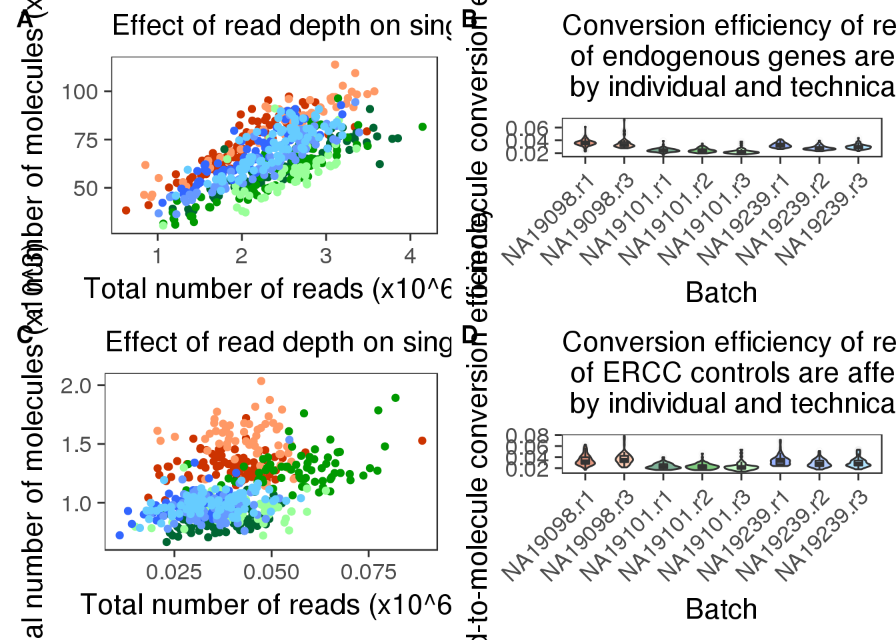
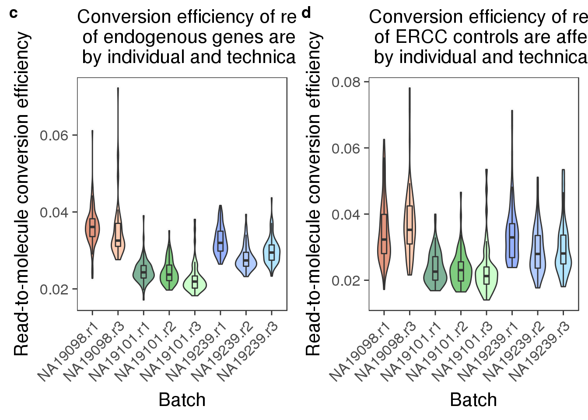

Last updated: 2017-03-06
Code version: 4a0bfb9
Capture efficiency: how many of the added ERCC spike-in molecules were successfully sequenced
Compute conversion efficiency of each cell using the filerted set of cells. Compare conversion efficiency between batches: is there an individual effect or batch effect of coversion efficiency?
The definition of conversion efficiency: total molecule counts/ total read counts
We will use analysis of variance to test whether conversion rates are significantly different between individuals. Results below are described at an alpha level of .05. (Analysis of variance (ANOVA) is used to determine whether there are any significant differences between the means of three or more independent (unrelated) groups)
library("dplyr")
library("ggplot2")
library("cowplot")
theme_set(theme_bw(base_size = 16))
theme_update(panel.grid.minor.x = element_blank(),
panel.grid.minor.y = element_blank(),
panel.grid.major.x = element_blank(),
panel.grid.major.y = element_blank(),
legend.key = element_blank(),
plot.title = element_text(size = rel(1)))
library("edgeR")
source("../../singleCellSeq/analysis/functions.R")Input annotation file.
anno <- read.table("../../singleCellSeq/data/annotation.txt", header = TRUE,
stringsAsFactors = FALSE)
head(anno) individual replicate well batch sample_id
1 NA19098 r1 A01 NA19098.r1 NA19098.r1.A01
2 NA19098 r1 A02 NA19098.r1 NA19098.r1.A02
3 NA19098 r1 A03 NA19098.r1 NA19098.r1.A03
4 NA19098 r1 A04 NA19098.r1 NA19098.r1.A04
5 NA19098 r1 A05 NA19098.r1 NA19098.r1.A05
6 NA19098 r1 A06 NA19098.r1 NA19098.r1.A06Input filtered read count data.
reads <- read.table("../data/reads-filter.txt", header = TRUE,
stringsAsFactors = FALSE)Input filtered molecule count data.
molecules <- read.table("../data/molecules-filter.txt", header = TRUE,
stringsAsFactors = FALSE)Input list of quality cells.
quality_single_cells <- scan("../data/quality-single-cells.txt",
what = "character")Subset data so we only keep cells that passed QC.
reads <- reads[, colnames(reads) %in% quality_single_cells]
molecules <- molecules[, colnames(molecules) %in% quality_single_cells]
anno <- anno[anno$sample_id %in% quality_single_cells, ]
stopifnot(dim(reads) == dim(molecules),
nrow(anno) == ncol(reads))Seperate ERCC and endogenous genes
#seperate reads
reads_ENSG <- reads[grep("ERCC", rownames(reads), invert = TRUE), ] #way to say not what you greped
reads_ERCC <- reads[grep("ERCC", rownames(reads), invert = FALSE), ]
#seperate moleclues
molecules_ENSG <- molecules[grep("ERCC", rownames(molecules), invert = TRUE), ]
molecules_ERCC <- molecules[grep("ERCC", rownames(molecules), invert = FALSE), ]#efficency for reads
total_counts_ERCC <- data.frame(total_reads = colSums(reads_ERCC),
total_molecules = colSums(molecules_ERCC))
# with is a function to modify original data, this is like mutate because it adds a cloumn to the data
total_counts_ERCC$conversion <- with(total_counts_ERCC,
total_molecules/total_reads)
summary(total_counts_ERCC) total_reads total_molecules conversion
Min. :10906 Min. : 666 Min. :0.01403
1st Qu.:31564 1st Qu.: 914 1st Qu.:0.02321
Median :38934 Median :1028 Median :0.02740
Mean :39700 Mean :1102 Mean :0.02965
3rd Qu.:46506 3rd Qu.:1276 3rd Qu.:0.03427
Max. :88786 Max. :2035 Max. :0.07813 #efficiency for endogenous genes
total_counts_ENSG <- data.frame(total_reads = colSums(reads_ENSG),
total_molecules = colSums(molecules_ENSG))
total_counts_ENSG$conversion <- with(total_counts_ENSG,
total_molecules/total_reads)
summary(total_counts_ENSG) total_reads total_molecules conversion
Min. : 625855 Min. : 30408 Min. :0.01712
1st Qu.:1959019 1st Qu.: 55561 1st Qu.:0.02471
Median :2396897 Median : 65636 Median :0.02882
Mean :2334326 Mean : 66634 Mean :0.02944
3rd Qu.:2727310 3rd Qu.: 78173 3rd Qu.:0.03318
Max. :4143812 Max. :113832 Max. :0.07225 boxplot(total_counts_ERCC$conversion, total_counts_ENSG$conversion, names = c("ERCC", "ENSG"), main="Summary of conversion efficency") This shows the capture efficiency is about the same between ERCC and ENSG but the variability is higher in the ERCCs.
## create a color palette with one color per individual and different shades for repplicates
great_color <- c("#CC3300", "#FF9966", "#006633", "#009900", "#99FF99", "#3366FF", "#6699FF", "#66CCFF")
depth_plot_ensg <- ggplot(data.frame(total_counts_ENSG,
batch = anno$batch),
aes(x = total_reads/10^6, y = total_molecules/10^3, col = factor(batch))) +
geom_point() +
scale_color_manual(values = great_color) +
labs(x = "Total number of reads (x10^6)",
y = "Total number of molecules (x10^3)",
title = "Effect of read depth on single cells (genes)")
#compare molecule to read counts
depth_plot_ensg This shows that as we get more reads he molecule number also goes up. Shows we are not at a saturdation.
depth_plot_ercc <- ggplot(data.frame(total_counts_ERCC,
batch = anno$batch),
aes(x = total_reads/10^6, y = total_molecules/10^3, col = factor(batch))) +
geom_point() +
scale_color_manual(values = great_color) +
labs(x = "Total number of reads (x10^6)",
y = "Total number of molecules (x10^3)",
title = "Effect of read depth on single cells (ERCC spike-in)")
depth_plot_ercc This shows that for some ERCCs we did hit saturation because molecule counts are not increasing as the molecule count does.
convertion_ensg <- ggplot(data.frame(total_counts_ENSG,
batch = anno$batch),
aes(x = factor(batch), y = conversion,
fill = factor(batch)), height = 600, width = 2000) +
geom_violin(alpha = .5) +
geom_boxplot(alpha = .01, width = .2, position = position_dodge(width = .9)) +
scale_fill_manual(values = great_color) +
labs(x = "Batch", y = "Read-to-molecule conversion efficiency", title = "Conversion efficiency of reads to molecules \n of endogenous genes are affected \n by individual and technical C1 batch") +
theme(axis.text.x = element_text(hjust=1, angle = 45))
convertion_ensg
Between individual
For individual \(i\), sample \(j\), we have \(n_{ij}\) cells. Here we compare the per cell conversion rate from molecule count to read count between the three individuals:
\[ Y_{ijk} = \mu_i + b_{ij} + \epsilon_{ijk} \]
where \(i = 1, 2, 3\), \(j = 1, 2, 3\), and \(k = 1, 2, \dots, n_{ij}\).
df_ENSG <- data.frame(total_counts_ENSG,
individual = factor(anno$individual),
replicate = factor(anno$replicate),
batch = factor(anno$batch))
#factor()- used to encode vector as a factor(category) - we added the annotation data to the ENSG count data frame in this step
library(lme4)
Attaching package: 'lme4'The following object is masked from 'package:nlme':
lmList#this package is used to fit and analyzed mixed models (linear/generalized linear/nonlinear)
lmer_ENSG_full <- lmer(conversion ~ individual + (1| individual:replicate),
data = df_ENSG)
lmer_ENSG_null <- lmer(conversion ~ 1 + (1| individual:replicate),
data = df_ENSG)
anova(lmer_ENSG_null, lmer_ENSG_full)refitting model(s) with ML (instead of REML)Data: df_ENSG
Models:
lmer_ENSG_null: conversion ~ 1 + (1 | individual:replicate)
lmer_ENSG_full: conversion ~ individual + (1 | individual:replicate)
Df AIC BIC logLik deviance Chisq Chi Df Pr(>Chisq)
lmer_ENSG_null 3 -4506.8 -4493.8 2256.4 -4512.8
lmer_ENSG_full 5 -4523.8 -4502.2 2266.9 -4533.8 21.077 2 2.649e-05
lmer_ENSG_null
lmer_ENSG_full ***
---
Signif. codes: 0 '***' 0.001 '**' 0.01 '*' 0.05 '.' 0.1 ' ' 1for each individaul and between batches
for (i in 1:length(unique(anno$individual))) {
print(unique(anno$individual)[i])
select_individual <- with(anno, individual == unique(individual)[i])
print( summary(aov(conversion ~ batch,
data = df_ENSG[select_individual, ]) ) )
}[1] "NA19098"
Df Sum Sq Mean Sq F value Pr(>F)
batch 1 0.000035 3.474e-05 0.88 0.35
Residuals 140 0.005528 3.949e-05
[1] "NA19101"
Df Sum Sq Mean Sq F value Pr(>F)
batch 2 0.000125 6.250e-05 5.722 0.00384 **
Residuals 198 0.002163 1.092e-05
---
Signif. codes: 0 '***' 0.001 '**' 0.01 '*' 0.05 '.' 0.1 ' ' 1
[1] "NA19239"
Df Sum Sq Mean Sq F value Pr(>F)
batch 2 0.000750 3.75e-04 32.11 5.99e-13 ***
Residuals 218 0.002546 1.17e-05
---
Signif. codes: 0 '***' 0.001 '**' 0.01 '*' 0.05 '.' 0.1 ' ' 1Shows a batch effect between replicates of individuals NA19101 and NA19239.
convertion_ercc <- ggplot(data.frame(total_counts_ERCC,
batch = anno$batch),
aes(x = factor(batch), y = conversion,
fill = factor(batch)), height = 600, width = 2000) +
geom_violin(alpha = .5) +
geom_boxplot(alpha = .01, width = .2, position = position_dodge(width = .9)) +
scale_fill_manual(values = great_color) +
labs(x = "Batch", y = "Read-to-molecule conversion efficiency", title = "Conversion efficiency of reads to molecules \n of ERCC controls are affected \n by individual and technical C1 batch") +
theme(axis.text.x = element_text(hjust=1, angle = 45))
convertion_ercc
Between individual
df_ERCC <- data.frame(total_counts_ERCC,
individual = factor(anno$individual),
replicate = factor(anno$replicate),
batch = factor(anno$batch))
library(lme4)
lmer_ERCC_full <- lmer(conversion ~ individual + (1| individual:replicate),
data = df_ERCC)
lmer_ERCC_null <- lmer(conversion ~ 1 + (1| individual:replicate),
data = df_ERCC)
anova(lmer_ERCC_null, lmer_ERCC_full)refitting model(s) with ML (instead of REML)Data: df_ERCC
Models:
lmer_ERCC_null: conversion ~ 1 + (1 | individual:replicate)
lmer_ERCC_full: conversion ~ individual + (1 | individual:replicate)
Df AIC BIC logLik deviance Chisq Chi Df Pr(>Chisq)
lmer_ERCC_null 3 -3811.1 -3798.1 1908.5 -3817.1
lmer_ERCC_full 5 -3827.1 -3805.4 1918.5 -3837.1 19.994 2 4.553e-05
lmer_ERCC_null
lmer_ERCC_full ***
---
Signif. codes: 0 '***' 0.001 '**' 0.01 '*' 0.05 '.' 0.1 ' ' 1For each individual between batches
for (i in 1:length(unique(anno$individual))) {
print(unique(anno$individual)[i])
select_individual <- with(anno, individual == unique(individual)[i])
print( summary(aov(conversion ~ batch,
data = df_ERCC[select_individual, ]) ) )
}[1] "NA19098"
Df Sum Sq Mean Sq F value Pr(>F)
batch 1 0.000181 1.813e-04 1.823 0.179
Residuals 140 0.013922 9.944e-05
[1] "NA19101"
Df Sum Sq Mean Sq F value Pr(>F)
batch 2 0.000008 4.190e-06 0.125 0.883
Residuals 198 0.006637 3.352e-05
[1] "NA19239"
Df Sum Sq Mean Sq F value Pr(>F)
batch 2 0.001112 5.56e-04 8.019 0.000436 ***
Residuals 218 0.015114 6.93e-05
---
Signif. codes: 0 '***' 0.001 '**' 0.01 '*' 0.05 '.' 0.1 ' ' 1ERCC batch effect only shows up for NA19239.
library(gridExtra)
Attaching package: 'gridExtra'The following object is masked from 'package:Biobase':
combineThe following object is masked from 'package:BiocGenerics':
combineThe following object is masked from 'package:dplyr':
combinegrid.arrange(
ggplot(data.frame(total_counts_ERCC,
batch = anno$batch),
aes(x = factor(batch), y = conversion,
fill = factor(batch)), height = 600, width = 2000) +
geom_violin(alpha = .5) +
geom_boxplot(alpha = .01, width = .2, position = position_dodge(width = .9)) +
scale_fill_manual(values = great_color) +
labs(x = "Batch", y = "Conversion rate", title = "Batch effect of conversion rate (ERCC spike-in)") +
theme(axis.text.x = element_text(hjust=1, angle = 45))
,
ggplot(data.frame(total_counts_ENSG,
batch = anno$batch),
aes(x = factor(batch), y = conversion,
fill = factor(batch)), height = 600, width = 2000) +
geom_violin(alpha = .5) +
geom_boxplot(alpha = .01, width = .2, position = position_dodge(width = .9)) +
scale_fill_manual(values = great_color) +
labs(x = "Batch", y = "Conversion rate", title = "Batch effect of conversion rate (genes)") +
theme(axis.text.x = element_text(hjust=1, angle = 45)),
ncol = 2
)
plot_grid(depth_plot_ensg + theme(legend.position = "none"),
convertion_ensg + theme(legend.position = "none"),
depth_plot_ercc + theme(legend.position = "none"),
convertion_ercc + theme(legend.position = "none"),
labels = LETTERS[1:4])
plot_grid(convertion_ensg + theme(legend.position = "none"),
convertion_ercc + theme(legend.position = "none"),
labels = letters[3:4])
need help with fitting the model and interpretting anova tables
This analysis provides evidence for batch effects in individual and technical replicates for ERCC and for endogenous gene conversion rate.
sessionInfo()R version 3.3.2 (2016-10-31)
Platform: x86_64-redhat-linux-gnu (64-bit)
Running under: Scientific Linux 7.2 (Nitrogen)
locale:
[1] LC_CTYPE=en_US.UTF-8 LC_NUMERIC=C
[3] LC_TIME=en_US.UTF-8 LC_COLLATE=en_US.UTF-8
[5] LC_MONETARY=en_US.UTF-8 LC_MESSAGES=en_US.UTF-8
[7] LC_PAPER=en_US.UTF-8 LC_NAME=C
[9] LC_ADDRESS=C LC_TELEPHONE=C
[11] LC_MEASUREMENT=en_US.UTF-8 LC_IDENTIFICATION=C
attached base packages:
[1] parallel stats4 grid stats graphics grDevices utils
[8] datasets methods base
other attached packages:
[1] gridExtra_2.2.1 lme4_1.1-12 workflowr_0.4.0
[4] org.Hs.eg.db_3.4.0 GOstats_2.40.0 graph_1.52.0
[7] Category_2.40.0 Matrix_1.2-7.1 GO.db_3.4.0
[10] AnnotationDbi_1.36.2 IRanges_2.8.1 S4Vectors_0.12.1
[13] Biobase_2.34.0 BiocGenerics_0.20.0 Humanzee_0.1.0
[16] sva_3.22.0 genefilter_1.56.0 mgcv_1.8-15
[19] nlme_3.1-128 BiocInstaller_1.24.0 scales_0.4.1
[22] VennDiagram_1.6.17 futile.logger_1.4.3 edgeR_3.16.5
[25] limma_3.30.11 dplyr_0.5.0 testit_0.6
[28] data.table_1.10.4 biomaRt_2.30.0 cowplot_0.7.0
[31] stringr_1.2.0 reshape2_1.4.2 rmarkdown_1.3
[34] Citrus_0.99 easyGgplot2_1.0.0.9000 ggplot2_2.2.1
loaded via a namespace (and not attached):
[1] httr_1.2.1 splines_3.3.2 assertthat_0.1
[4] RBGL_1.50.0 yaml_2.1.14 RSQLite_1.1-2
[7] backports_1.0.5 lattice_0.20-34 digest_0.6.12
[10] minqa_1.2.4 colorspace_1.3-2 htmltools_0.3.5
[13] plyr_1.8.4 GSEABase_1.36.0 XML_3.98-1.5
[16] devtools_1.12.0 xtable_1.8-2 git2r_0.18.0
[19] tibble_1.2 annotate_1.52.1 withr_1.0.2
[22] lazyeval_0.2.0 survival_2.40-1 magrittr_1.5
[25] memoise_1.0.0 evaluate_0.10 MASS_7.3-45
[28] tools_3.3.2 munsell_0.4.3 locfit_1.5-9.1
[31] lambda.r_1.1.9 nloptr_1.0.4 RCurl_1.95-4.8
[34] rstudioapi_0.6 AnnotationForge_1.16.1 bitops_1.0-6
[37] labeling_0.3 gtable_0.2.0 DBI_0.5-1
[40] curl_2.3 R6_2.2.0 knitr_1.15.1
[43] rprojroot_1.2 futile.options_1.0.0 stringi_1.1.2
[46] Rcpp_0.12.9 This site was created with R Markdown